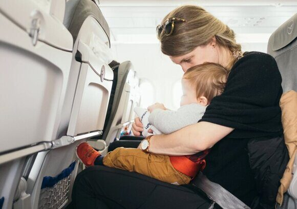

« Назад
Загранпаспорт для ребенка до года – особенности оформления в 2025

Оформление загранпаспорта для новорожденного – необходимый процесс, который дает возможность родителям обеспечить международное путешествие даже с самыми маленькими детьми. В 2025 году требования и технологии оформления документов продолжают совершенствоваться, делая процедуру более удобной и понятной. В данной статье подробно рассматриваются все этапы оформления загранпаспорта для новорожденного, необходимые документы, особенности подачи заявления, а также нюансы выбора между старыми и новыми образцами паспорта. Мы разберем процедуру на примере работы через государственные порталы и физические отделения, а также дадим практические советы для родителей.
1. Зачем нужен загранпаспорт для новорожденного
Загранпаспорт является основным удостоверением личности при пересечении государственной границы. Раньше данные ребенка можно было вписать в заграничный паспорт родителя, однако современные правила требуют индивидуального документа для каждого гражданина, что особенно актуально при международных поездках.
Преимущества отдельного загранпаспорта для новорожденного:
- Легальность пересечения границы: многие страны требуют обязательного наличия индивидуального паспорта для каждого члена семьи.
- Ускоренная проверка документов на границе: наличие уникального документа упрощает контроль и идентификацию.
- Удобство при повторном получении документов: при быстром изменении внешности новорожденного отдельный паспорт позволяет избежать повторных обновлений или разногласий с биометрическими данными.
2. Выбор типа паспорта: старый образец или биометрический новый
На сегодняшний день для новорожденных доступно два типа загранпаспортов:
А. Загранпаспорт нового образца (биометрический)
- Срок действия: до 10 лет.
- Включает электронный микрочип с биометрическими данными (фото, отпечатки пальцев).
- Фотография производится в отделении МВД на специальном оборудовании.
- Требует личного присутствия ребенка, что может быть сложным для новорожденных.
Б. Загранпаспорт старого образца
- Срок действия: 5 лет.
- Фотография может быть выполнена в фотостудии или загружена в электронном виде через портал.
- Обычно процесс оформления менее стрессовый для новорожденного, так как не требуется биометрическая съемка в МВД.
- Рекомендуется для малышей до года, поскольку внешний облик ребенка быстро меняется.
Важно: специалисты рекомендуют для новорожденных, особенно до 1 года, выбирать загранпаспорт старого образца, поскольку биометрия и фиксированная фотография, действующая 10 лет, могут вызвать проблемы при идентификации при значительных изменениях внешности.
3. Необходимые документы для оформления загранпаспорта
Перед началом процедуры оформления стоит подготовить пакет документов, который может варьироваться в зависимости от способа подачи заявления (онлайн через портал Госуслуг, через МФЦ "Мои документы" или непосредственно в отделении УВМ МВД). Ниже приведен примерный перечень необходимых документов:
- Оригинал свидетельства о рождении ребенка и заверенная копия.
- Паспорт родителя (или оба паспорта, если требуется согласие двух родителей).
- Подтверждение прописки ребенка (справка или регистрационная карточка).
- Заявление на оформление загранпаспорта (можно заполнить в электронном виде через портал Госуслуг или в бумажном варианте в отделении).
- Квитанция об оплате государственной пошлины:
- Для старого образца – 1000 рублей.
- Для нового биометрического паспорта – 3000 рублей.
- Фотографии:
- Для загранпаспорта старого образца – 4 цветные фотографии размером 3,5×4,5 см, соответствующие требованиям.
- Для нового образца 2 фотографии для анкеты, на сам загранпаспорт выполняется непосредственно в отделении МВД.
- При наличии усыновления или иных обстоятельств – дополнительные документы, подтверждающие право на оформление.
Каждый документ должен быть проверен на актуальность и корректность заполнения, чтобы избежать отказа при подаче заявления.
4. Поэтапная инструкция оформления через онлайн-сервисы и МФЦ
Ниже представлена подробная пошаговая инструкция оформления загранпаспорта для новорожденного в 2025 году.
4.1. Подготовительный этап
Шаг 1. Получение свидетельства о рождении:
- Получите оригинал и сделайте заверенную копию свидетельства.
- Проверьте правильность всех данных (ФИО, дата рождения, место рождения).
Шаг 2. Подготовьте паспорта родителей:
- Убедитесь, что паспорта родителей действительны.
- Если требуется согласие обоих родителей, подготовьте соответствующее заявление.
Шаг 3. Подготовка фотографии (если оформляется паспорт старого образца):
- Закажите профессиональную фотосессию в специализированной студии или сделайте фото дома, соблюдая требования (голова без головного убора, нейтральный фон, открытые глаза, отсутствие бликов и резких теней).
4.2. Выбор способа подачи заявления
Существует три основных способа подтверждения и подачи заявления:
Через Единый портал Госуслуг:
- Регистрируетесь, заполняете анкету, загружаете сканы документов и фотографию.
- Оплата госпошлины производится онлайн.
Через Многофункциональный центр (МФЦ "Мои документы"):
- Обращаетесь лично, сотрудники помогут заполнить заявление.
- Происходит проверка оригиналов документов.
В отделении МВД по вопросам миграции:
- Запись по телефону или через сайт.
- Подходит для оформления загранпаспорта нового образца с биометрической фотографией.
4.3. Процесс подачи заявления
После выбора способа подачи заявления выполните следующие действия:
- Заполните заявление, указывая всю требуемую информацию, включая данные из свидетельства о рождении и паспорта родителя.
- Проверьте данные на отсутствие ошибок. Любая неточность или опечатка может привести к возврату документов или задержке оформления.
- Загрузите сканы или приложите оригиналы документов в соответствии с требованиями выбранного способа.
- Оплатите государственную пошлину онлайн или в кассе МФЦ/отделения МВД.
4.4. Визит в учреждение (при необходимости)
Если оформление производится с личным присутствием:
Для оформления паспорта нового образца:
- Посетите отделение МВД, где специалист произведет биометрическую съемку ребенка.
- Подготовьте ребенка к визиту: выберите удобное время, чтобы минимизировать стресс для малыша.
Для оформления паспорта старого образца:
- Часто визит может быть ограничен проверкой документов, так как фотография уже загружена или сделана заранее.
- Убедитесь, что все документы были подтверждены, и получите расписку о принятии заявления.
4.5. Ожидание готовности документа
После подачи заявления начинается этап ожидания:
- Срок изготовления загранпаспорта варьируется от 5 до 15 рабочих дней, но закон позволяет период до одного календарного месяца.
- Статус заявки можно отслеживать в личном кабинете на портале Госуслуг или через справочную службу соответствующего учреждения.
- Получив уведомление о готовности, родитель посещает учреждение для получения паспорта (при личном получении).
5. Советы и рекомендации при подготовке заявки
Чтобы оформление загранпаспорта для новорожденного прошло максимально гладко, принимаете к сведению следующие советы:
- Начинайте процесс оформления сразу после получения свидетельства о рождении. Чем раньше вы подадите заявление, тем быстрее получите документ.
- Тщательно проверяйте все введенные данные. Любая ошибка может вызвать задержку в изготовлении или отказ в выдаче паспорта.
- Используйте онлайн-сервисы, если у вас есть возможность. Электронная подача на портале Госуслуг экономит время и избавляет от необходимости личного посещения многих учреждений.
- Заблаговременно запланируйте визит в отделение МВД, если оформляете паспорт нового образца, так как запись может занимать некоторое время.
- Консультируйтесь со специалистами. Если у вас возникают вопросы, обратитесь за помощью к сотрудникам МФЦ или паспортно-визового центра, чтобы избежать ошибок при подаче заявления.
- Обратите внимание на актуальные требования к фотографиям, так как стандарты могут немного меняться каждый год.
6. Основные трудности и их решение
При оформлении загранпаспорта для новорожденного могут возникнуть следующие трудности:
Проблемы с фотографией:
- Решение: обращайтесь в специализированные фотостудии, которые знакомы с требованиями к загранпаспортным фотографиям, или обязательно делайте фото дома в спокойной обстановке.
Ошибки при заполнении заявления:
- Решение: дважды проверьте все данные, воспользуйтесь онлайн-подсказками на портале, уточняйте информацию у специалистов.
Неточности в документах (например, ошибки в свидетельстве о рождении):
- Решение: перед подачей заявления убедитесь, что все бумаги корректны, и при необходимости внесите исправления в органах ЗАГС.
Задержки в обработке заявки:
- Решение: следите за статусом заявки через электронный кабинет, при необходимости звоните в справочную службу. Помните, что закон гарантирует максимальный срок изготовления, и в большинстве случаев сроки соответствуют заявленным.
Стресс ребенка во время визита:
- Решение: выбирайте моменты, когда малыш обычно спокоен (после сна или кормления). Привлеките к процессу близкого человека, чтобы создать комфортную атмосферу.
7. Часто задаваемые вопросы
В этом разделе мы собрали ответы на самые популярные вопросы по оформлению загранпаспорта для новорожденного в 2025 году.
Вопрос 1: Обязательно ли оформлять отдельный загранпаспорт для новорожденного?
- Ответ: Да, современные требования миграционных служб требуют оформления индивидуального загранпаспорта для каждого гражданина, независимо от возраста, что гарантирует корректное прохождение паспортного контроля на границе.
Вопрос 2: Какой тип паспорта лучше выбрать для новорожденного – новый образец или старый?
- Ответ: Для детей до года рекомендуется оформлять загранпаспорт старого образца, поскольку фотография, сделанная для паспорта нового образца с биометрией, может быстро устаревать ввиду изменения внешности малыша. Выбор зависит от ваших планов и возможностей личного визита в МВД.
Вопрос 3: Можно ли оформить загранпаспорт для ребенка сразу после рождения?
- Ответ: Да, оформление загранпаспорта для новорожденного доступно с момента получения свидетельства о рождении. Рекомендуется начинать процесс как можно раньше, чтобы избежать задержек при планировании международной поездки.
Вопрос 4: Какие документы необходимы для оформления загранпаспорта для новорожденного?
- Ответ: Основной пакет документов включает свидетельство о рождении ребенка, паспорт родителя (или родителей), документы, подтверждающие прописку, заявление на оформление загранпаспорта, квитанцию об оплате госпошлины, а также фотографии (при оформлении паспорта старого образца).
Вопрос 5: Сколько времени занимает оформление загранпаспорта для новорожденного?
- Ответ: В среднем срок изготовления загранпаспорта составляет от 5 до 15 рабочих дней, однако в целом по закону этот срок не должен превышать одного календарного месяца с момента подачи заявления.
Вопрос 6: Какие нюансы следует учитывать при подаче заявления через онлайн-сервисы?
- Ответ: При использовании портала Госуслуг убедитесь, что все данные введены корректно, отсканы все необходимые документы в хорошем качестве, а мобильный телефон и электронная почта актуальны для получения уведомлений об изменении статуса заявки.
8. Выводы и рекомендации
Оформление загранпаспорта для новорожденного в 2025 году – это необходимая процедура для семей, планирующих международные поездки. Своевременная подготовка документов и выбор правильного типа паспорта позволяют обеспечить безопасность ребёнка и упростить процесс пересечения государственной границы.
Рекомендуется:
- Начинать оформление паспорта сразу после получения свидетельства о рождении.
- Выбирать паспорт старого образца для малышей до года, чтобы избежать проблем с быстро меняющимся внешним обликом.
- Пользоваться удобными онлайн-сервисами, такими как портал Госуслуг, для ускорения и упрощения процедуры.
- Консультироваться со специалистами и следовать рекомендациям миграционной службы.
- Тщательно проверять корректность всех документов, чтобы избежать задержек в оформлении.
Эффективное оформление загранпаспорта для новорожденного позволяет не только подготовиться к незабываемым поездкам, но и избежать бюрократических сложностей при пересечении границы. Внимательное соблюдение всех этапов процедуры и использование современных электронных сервисов значительно упрощает процесс получения документа.
Заключение
Оформление загранпаспорта для новорожденного в 2025 году является необходимым шагом для подготовки к международным поездкам. Соблюдение всех указанных этапов и рекомендаций позволит родителям быстро и качественно получить требуемый документ, снизив уровень стресса и избежав бюрократических проволочек. Выбирайте удобный способ подачи заявления, следите за актуальными требованиями и не откладывайте оформление – ваш малыш заслуживает только самого лучшего.
Забудьте об очередях: паспорт для ребенка до года за 1 час
Паспортно-визовый центр «Север» – ваш надежный партнер в оформлении загранпаспорта! Мы понимаем, как важно для родителей не терять ни минуты драгоценного времени, поэтому предлагаем максимально оперативное и качественное обслуживание - оформим загранпаспорт для вашего малыше всего за 60 минут.
За более чем 25 лет работы в центре Москвы мы заслужили доверие многих семей, которые оценили наш профессионализм, индивидуальный подход и заботу на каждом этапе оформления.
Наши преимущества:
- Быстрая процедура – получите документ для вашего малыша уже за один час.
- Полное сопровождение – наши специалисты помогут с подготовкой и проверкой всех документов, что исключает лишние хлопоты.
- Доступное расположение – мы находимся в самом сердце Москвы, что делает нашу работу удобной для вас.
- Опыт и надежность – более 25 лет успешной работы и множество довольных клиентов – залог вашего спокойствия.
- Индивидуальный подход – консультируем и сопровождаем каждую семью, учитывая все особенности вашего случая.
Звоните по номеру +7 (925) 585-41-95 и убедитесь сами, как просто и быстро можно получить загранпаспорт для ребенка, не тратя время на очередь и лишние движения. Доверьте оформление паспорта профессионалам центра «Север» – мы сделаем все, чтобы ваше путешествие началось с положительных эмоций!
|